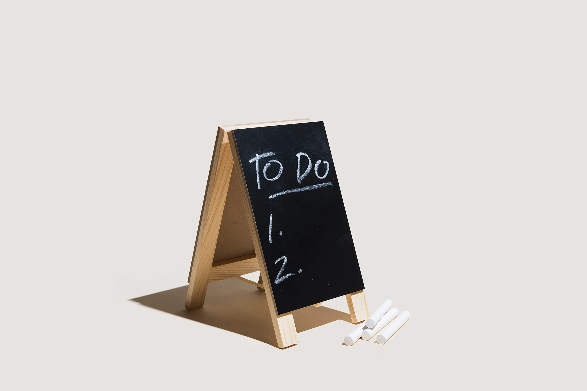

My projects
NexaFlow
NexaFlow is a multi-page digital agency website designed to represent a professional web development studio. It includes structured pages such as Home, Services, Features, Pricing, About, and Contact. The project focuses on scalable layout design, consistent branding, and SaaS-style presentation, simulating a real agency that offers website development and digital solutions.

Casa Bella
Casa Bella is a modern restaurant website designed to present a high-end dining experience online. It showcases the restaurant’s atmosphere, menu highlights, and brand identity through a clean, visually appealing layout. The goal of the project is to simulate a real-world restaurant landing page with strong emphasis on typography, imagery, and user experience for customers exploring the menu or making reservations.

TaskFlow Pro
TaskFlow Pro is an enhanced productivity application built to manage tasks with a more polished and professional interface. It includes improved UI design, task categorization, filtering systems, dark mode support, and smoother user interactions. The project simulates a real-world productivity tool and demonstrates stronger front-end architecture and UX design principles.

TaskFlow
TaskFlow is a lightweight task management web application that allows users to create, edit, delete, and track daily tasks. It includes filtering features for active and completed tasks, along with live statistics. The project demonstrates core JavaScript skills such as DOM manipulation, event handling, and local storage for persistent data.